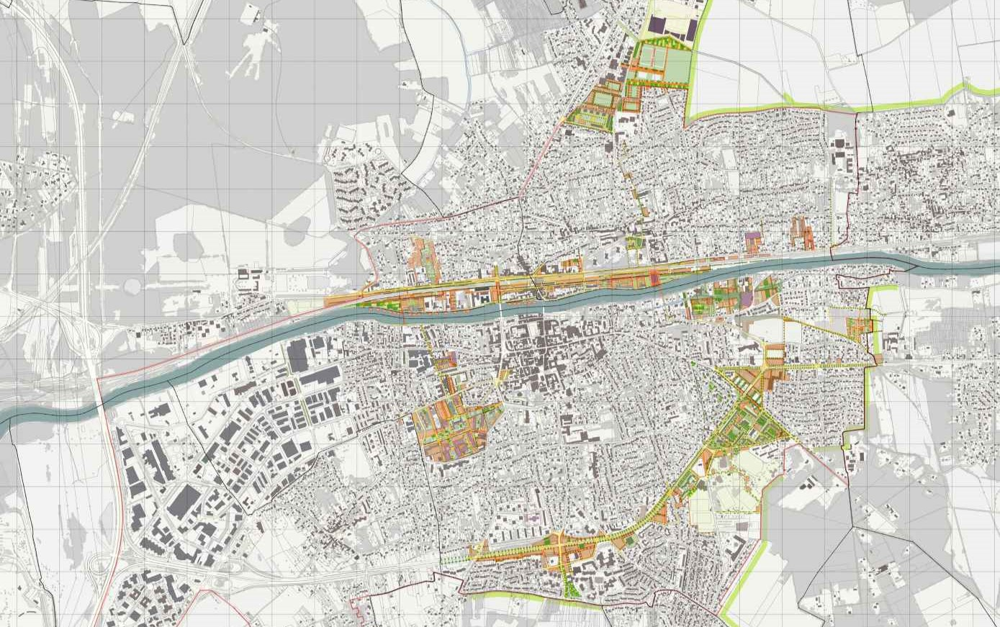

Survolez l'image et agrandissez/réduisez la vue à l'aide de la molette.
Budget: -
Surface: 1200 ha
Date début: 2011
Date fin: 2011
Maîtrise d'ouvrage: Communauté d’agglomération de Marne et Gondoire
Co-traitant(s): bureau des paysages, mandataire
Description:
Le projet de mise en valeur du Cœur Urbain (environ 38 000 habitants) de la communauté d’agglomération
de Marne et Gondoire située à une trentaine de kilomètres à l’est de Paris, ambitionne de remodeler durablement
l’espace urbain, d’impulser un développement territorial planifié, de mettre en oeuvre une nouvelle forme urbaine
dense et durable. Un Plan-guide évolutif, véritable trame urbaine, détermine les espaces publics, les secteurs
à enjeux, les îlots constructibles et fixe les conditions de leur intégration au milieu existant. Sur des secteurs
opérationnels identifiés (sites d’impulsion), des stratégies sont élaborées.
A partir du relevé des ressources et de
leurs qualités, une faisabilité fixe pour chaque parcelle une capacité constructive, préfigure des formes urbaines,
des typologies et des programmes. Comment accueillir 2 300 nouveaux logements en favorisant la qualité des
modes de vie et la prise en compte de ce qui est “déjà-là” ? Habiter la vallée de la Marne, véritable "Eldorado
Urbain", c’est une manière de vivre autrement dans la grande ville. Habiter autour d’un jardin, sur les bords de
Marne, sur le coteau, le long des quais de la gare. La maîtrise du temps, comme de l’argent, est la matière
même du projet. Sur le site de l’hôpital Saint-Jean, il est déterminant d’agir vite et de commencer les travaux
dès le transfert de l’hôpital, en commençant par les espaces publics.
La conception de ces derniers constitue,
avec le maillage des sites, un des enjeux majeurs pour favoriser la mixité sociale et fonctionnelle du site.
Par ce biais, ce projet propose des réponses concrètes aux problèmes de logements, de déplacements et
de stationnement. Il défend la qualité des espaces publics et des constructions, tout en accompagnant le
développement des équipements et des services à la personne.
{kind=link}
{kind=link}